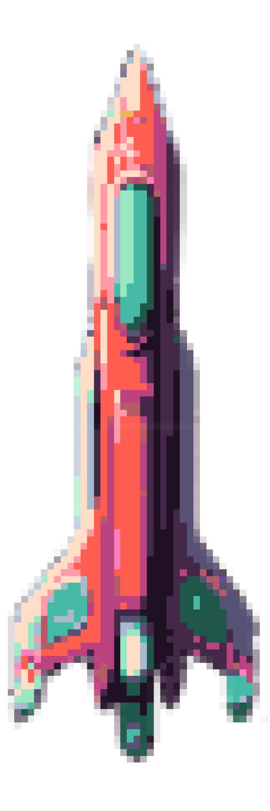

Your Board
Opponent's Board
Opponent's Board


Place your ships...

Press Start to engage your offenses!
Questions and Clarifications
> About the Difficulties
-
Easy AI (Random)
Uses purely random attacks without any strategy. Simply picks spots randomly on the board, regardless of previous hits or misses. -
Normal AI (Adjacent)
Starts with random attacks. After scoring a hit, it enters "adjacent mode," focusing subsequent attacks on neighboring cells to find the rest of the ship. -
Hard AI (Checkerboard)
Attacks in a checkerboard pattern, ensuring no ship can hide in the gaps. Once it hits a ship, it switches to adjacent targeting for more precise attacks. -
Extreme AI (Probability Map)
Creates a probability map of likely ship locations based on remaining ships, previous hits, and possible ship placements. Attacks the highest probability spots, making it the most strategic AI.
> "Probability Map" and "Targets" Toggles
- The "Probability Map" and "Target" toggles appear during a game with Extreme AI. They are used to visually show how the AI thinks.
-
Probability Map Toggle
This visually displays a heatmap of the probability values in the gameboard. The brighter the cell, the more likely a ship is occupying it. The darker the cell, the less likely a ship is present. -
Targets Toggle
This visually displays the cells that the AI plans to attack on the next moves. These cells have the highest values on the probability map, and therefore have the highest likelihood a ship may occupy it.
> How the Extreme AI works
- The Extreme AI targeting in this Battleship game uses a probability map to make informed decisions. This is how it works:
-
Reset Probability Map
Create a "probabilty" property for each cell. Then, set the probability of all cells on the board to zero. -
Update Probability Map
When updating the probability map, the AI uses two techniques to maximize its chances to destroy a ship.-
Default Mode
This mode is triggered by default. The AI finds *every possible* spot a ship could have been placed on. For each remaining ship length, it considers both horizontal and vertical placements across the entire board. If a ship can legally fit (without overlapping known hits or extending off the board), the AI increments the probability value for all cells that ship would have occupied. This creates a heat map of likely ship locations based on the current game state. -
Adjacent Mode
This mode is triggered when the AI identifies a hit on a ship that hasn't been sunk. In this mode, the AI prioritizes targeting cells adjacent to the known hits to maximize the chances of completing the sinking of the ship. The AI evaluates both horizontal and vertical placements around the hit cells, updating a probability map to reflect higher probabilities for these adjacent cells. This focused approach allows the AI to efficiently target and sink ships by concentrating attacks around already damaged areas, increasing the likelihood of successful hits.
-
Default Mode
-
Select Highest Probability
The AI scans the entire probability map and selects the cell with the highest probability as its target. If multiple cells tie for the highest probability, it randomly chooses among them. -
Repeat the Process
The AI repeats these steps until all ships have been destroyed. By following this approach, the AI can make smart, educated guesses about the locations that may most likely have a ship.